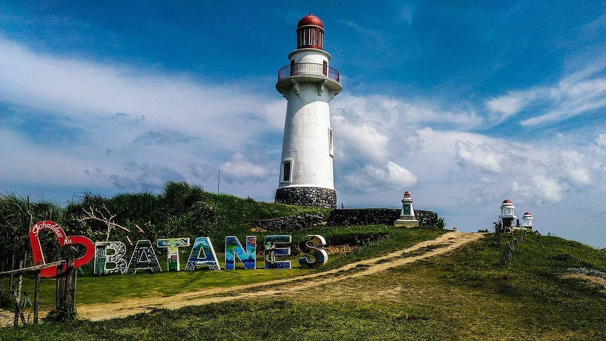
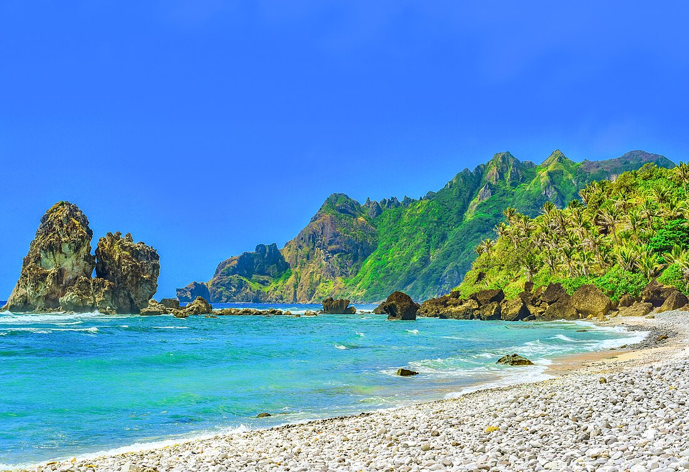
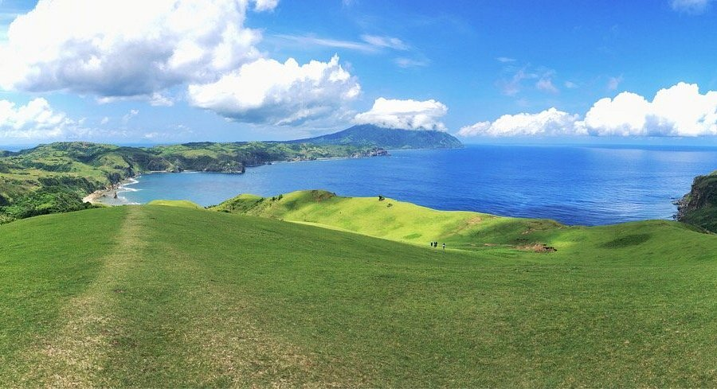
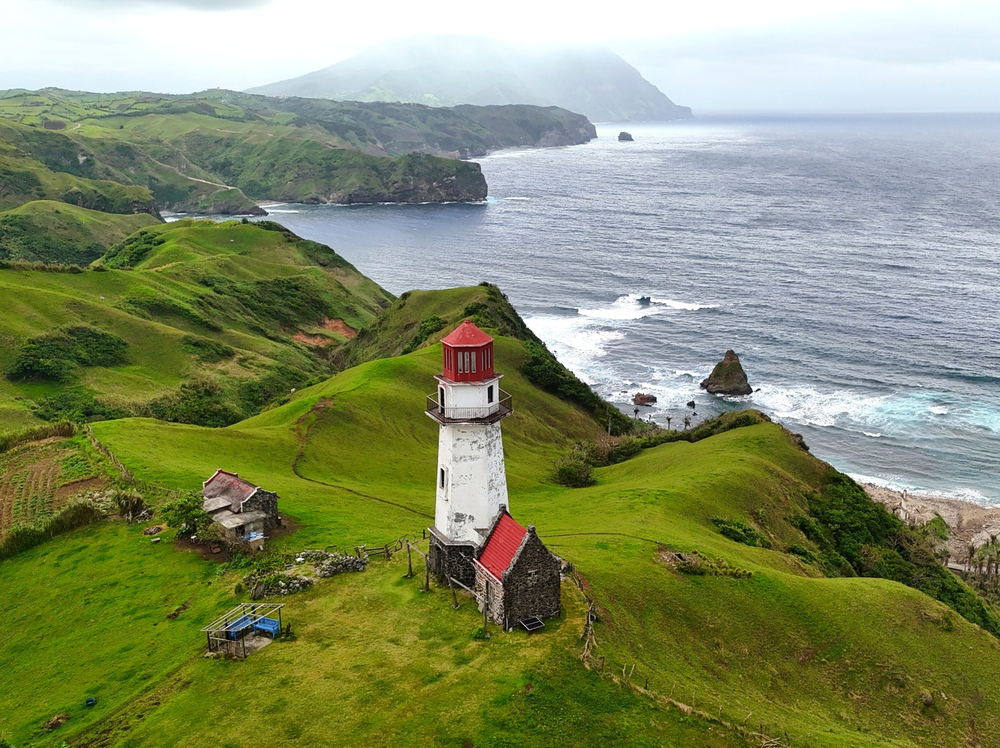
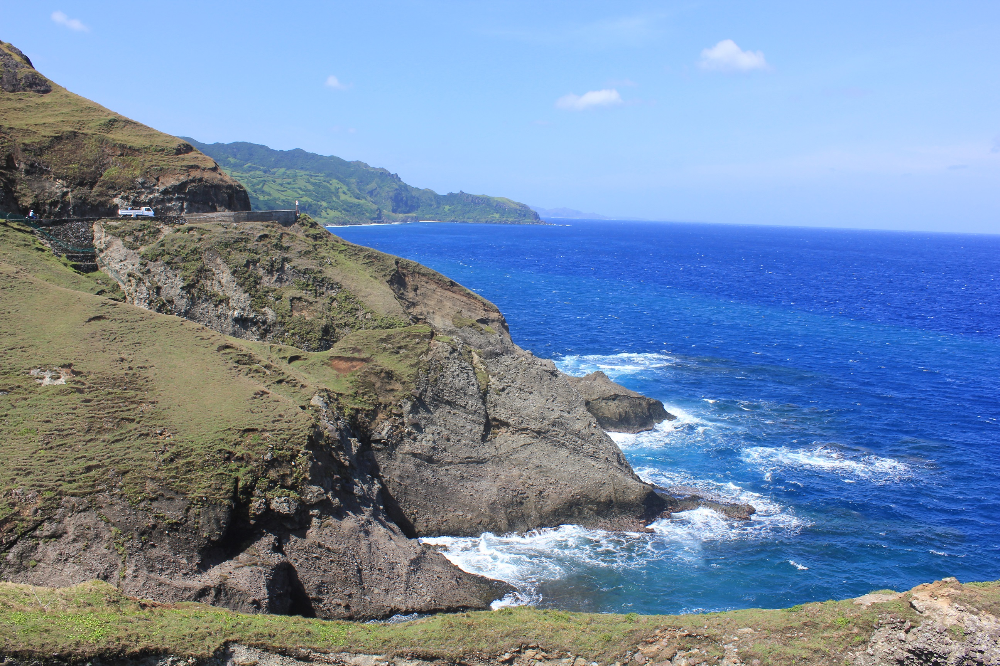

Basco Lighthouse
Perched atop Naidi Hills, the iconic Basco Lighthouse offers breathtaking 360-degree views of the rolling hills, the West Philippine Sea, and Basco town. This white lighthouse is one of the most photographed landmarks in Batanes and provides a stunning vantage point, especially during sunrise and sunset.

Valugan Boulder Beach
A unique natural wonder, Valugan Boulder Beach is covered with massive boulders formed by ancient volcanic eruptions. The powerful waves crashing against the rocks create a dramatic scene, making it a favorite spot for photographers and nature lovers seeking raw, untamed beauty.

Vayang Rolling Hills
Experience the iconic rolling hills that Batanes is famous for. These lush green hills stretch endlessly, dotted with grazing livestock and traditional Ivatan houses. The scenic beauty and peaceful atmosphere make it perfect for leisurely walks and photography.

Sabtang Island
Take a boat ride to Sabtang Island and step back in time. This island is home to traditional stone houses with cogon-thatched roofs, charming villages, and pristine beaches. The journey itself is an adventure, offering stunning views of the surrounding waters.

Marlboro Hills (Racuh a Payaman)
Named after the famous cigarette commercial filmed here, Marlboro Hills showcases vast pastures with cattle and horses grazing freely. The panoramic views of the Pacific Ocean and the surrounding countryside are truly spectacular, especially during golden hour.

Honesty Coffee Shop
Experience the famous Ivatan honesty system at this unmanned coffee shop. Choose your snacks and drinks, drop your payment in the box, and enjoy the trust-based culture that Batanes is known for. It's not just a shop—it's a testament to the integrity of the local community.

Chawa View Deck
Stand at the edge of dramatic cliffs overlooking the Pacific Ocean at Chawa View Deck. The powerful waves crashing against the rocks below create a mesmerizing spectacle. This viewpoint offers some of the most dramatic coastal scenery in all of Batanes.